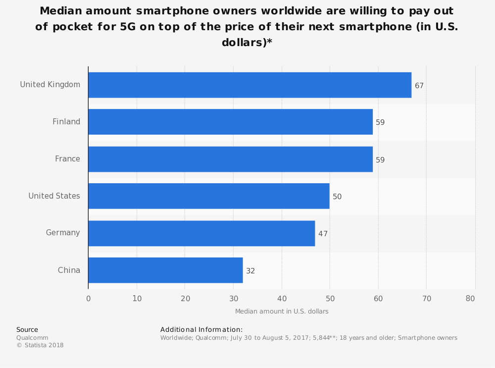
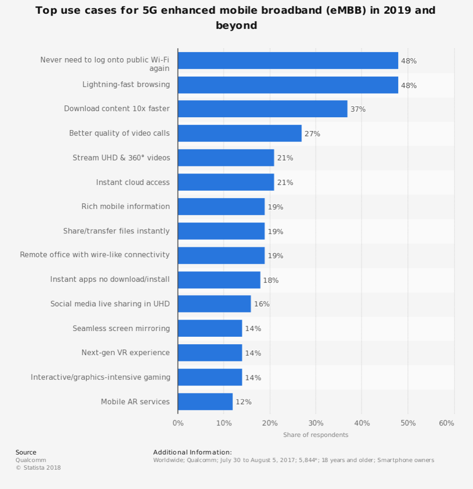
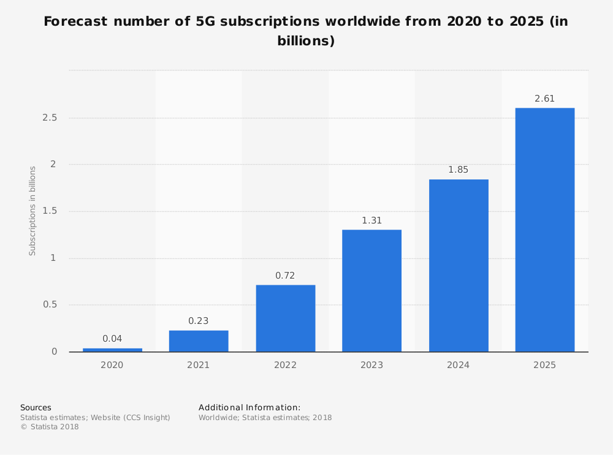

| Comparison between the traditional Internet and the Internet of Things | ||
|---|---|---|
| Topic | Traditional Internet | The Internet of Things |
| 1. Who creates content? | Human | Machine |
| 2. How is the content consumed? | By request | By pushing information and triggering actions |
| 3. How is the content combined? | Using explicitly defined links | Through explicitly defined operators |
| 4. What is the value? | Answer questions | Action and timely information |
| 5. What was done so far? | Both content creation(HTML) and content consumption(search engines) | Mainly content creation |
5G as investment of future is looming at the corner. High tech companies around the world are competing the new, powerful, and meaningful technology. 5G become one of the frontiers of competing and both the United States and China are trying to dominate next revolution of technology through domination of 5G and Artificial Intelligence. But none of them is commercialize nor meaningful and useful for more than bluffing and boasting. The real race to 5G, will eventually transform our world and take us to the next level of technology and new life style.
What is the key difference of technology?
5G will provide enormous technology innovation by 5G NR (New Radio) air port design and 5G NextGen core network.
When are we able to see 5G commercialized?
Probably this year 2019. 3GPP will employ 5G NR in 2019. However, just like all the previous mobile network, it still need time to commercialize 5G to everybody. At the same time, 4G LTE will still keep developing and work as base of 5G and provide high speed mobile Internet service in the area that 5G is limited.
Who is developing 5G?
3GPP ( The third generation of cooperation project, which is the standard organization that help to define 5G) is developing 5G, this standard organization monitored and supervised 3G UMTS (includes HSPA) and 4G LTE development before. 3GPP consists of many corporation and company ranged from all over the mobile Internet industry, so everyone in 3GPP is participating 5G development and innovation. It covers all the areas that include infrastructure provider, equipment and parts manufacture, mobile service provider, and service provider.
Apparently, 5G will outmatch all the previous mobile network and brand new 5G network extend from traditional mobile Internet participant to cars.
The wireless spectrum of the new 5G network will be in high frequency band. So that the 5G network will be able to transfer a great deal of amount of data at a speed that way faster than 4G LTE. (What are the Key Elements for the 5G Network, n.d.)
This graphic shows 5G will be reliable, super fast browsing, higher quality of video calls, instant cloud communication, dynamic website interface, and able to watch ultra high definition videos.
What companies are competing in 5G networks?
Huawei is the first Chinese company that compete with companies around the world in 5G technology and network. (Deutsche Telekom launches "Europe's first" 5G network with Huawei) and a few of other companies are also considered as leading in 5G networks. They are Nokia, Ericsson, Qualcomm, Sumsung, and Intel. They all invested heavily in 5G network and technologies.
Huawei start to deploy 5G network in 2018. They conduct multiple commercial 5G test around the world with multiple partners. They are claim that they launched the first 5G base station chipset in the world. They can provide the 5G chipset that can cover from backend and frontend, network, and data center. Its chipset supports all bands and all spectrum networks, and provides one of the best 5G wireless technology to customers. They conduct 2.6 GHz band 5G base station NR test so that they step in the third phase of 5G technology developmental test. (GreyB, 2018)
Ericsson is another outstanding leader and key player in 5G network and technology. It is believed to be the only company that is currently working in all aspects of 5G technology platform. They have the first progress in 5G radio area, make them the first one to test it in real world. They participate in the 5G standardization process. They claim that they has conducted a lot of 5G NR and devices in all spectrum and bands. Ericsson also collaborate with multiple companies around the world to achieve the goal of 5G commercialization. Ericsson also deploy multiple 5G equipment and network around the world so far. (GreyB, 2018)
US company Qualcomm was the leader in 4G LTE network, and they are one of the leading companies in 5G network as well. Qualcomm has already produced the world first 5G modem, called Qualcomm Snapdragon X50 5G modem. Qualcomm also is working on the new 5G NR technology and made some progress. (GreyB, 2018)
Finland’s Nokia is also the leading player in the game of 5G. Nokia is leading in the 5G new radio, 5G architecture, and 5G platforms. Nokia launched a project called 5G MoNArch. The goal of the project is to put 5G network architecture in real world. They collaborate with multiple companies, higher education schools, research institutes to test the 5G architecture in multiple situation and area. This project is to specify, capitalize, and extend the 5G architecture. Nokia also has another project called Future X network architecture for 5G to provide great deal of network coverage and ensure cost efficiency of 5G equipment and operation. The Future X network architecture provides a full page of network capabilities for real world 5G networks. Nokia also manufactured its own chipsets called ReefShark. Nokia collaborate with other telecommunicate companies around the world to research and develop 5G technologies as well. (GreyB, 2018)
Samsung is one of the biggest chip manufacturers and smartphone producers. They also belong to the leading group of 5G.
5G is still a next generation technology, but the subscriptions of 5G will grow in a fast pace. Customers want to has faster Internet access and connect everything with the world, including monitor and control your home devices and equipment remotely, self-driving cars, and the use of AI of course. Business customers also desire faster Internet service to boost their profit, expand their market, and diversify their business. They will rely on 5G technology to support car industry, medicine industry, public service, manufacturing, and smart city. 5G promote Internet of things, instant cloud calculation, big data operation, and network security to the next level.
5G is the frontier of next generation of technology and technology dominance contest. We are receiving thousands of news about 5G progress around the world. Internet brought us new modern life. 5G will definitely improve our life, or even change our way of life to some degree.
References
Deutsche Telekom launches "Europe's first" 5G network with Huawei. (n.d.).
GreyB. (2018, 08 21). 5G Market Research: What are the top players upto? Retrieved from Greyb services.
What are the Key Elements for the 5G Network. (n.d.). Retrieved from SDX Central: https://www.sdxcentral.com/5g/definitions/key-elements-5g-network